Assignment 3
Further Data Exploration
A Second Step
A First Attempt
Loading in the ‘TEDS_2016’ dataset, I attempt to run a regression on ‘Tondu’, selectively using ‘Age’, ‘Edu’, and ‘income’ as predictor variables. To do this, I use a command to create an function labeled ‘regplot’:
regplot=function(x,y){
fit=lm(y~x)
plot(x,y)
abline(fit,col="red")
}Next, I cycle through each iteration with permutations of the following command in order to create and graph the regressions:
attach(TEDS_2016)
regplot(Tondu,income)Which produces the following graphs:
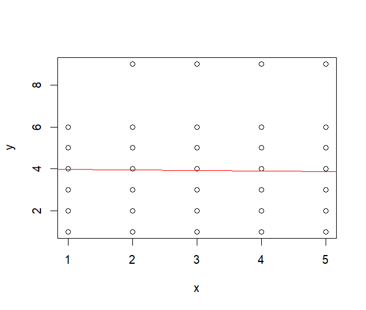 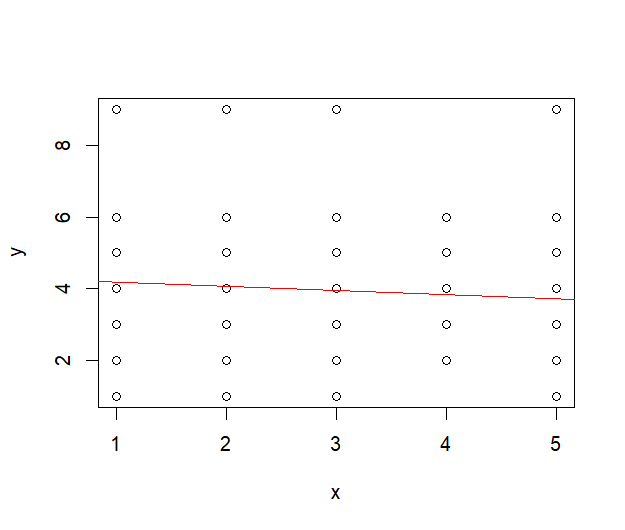 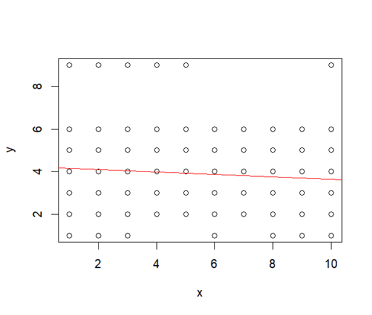
But there appears to be a problem, visually at least. Nearly every value of the independent variable in the series seems to be closely related to a single ‘Tondu’ value, namely ‘4’. To try to grapple with these relationships, I construct a 3d plot, regressing ‘Tondu’ on both ‘Age’ and ‘Edu’ using:
library(tidyverse)
library(plotly)
data(TED_2016)
attach(TEDS_2016)
# Generate plot on three quantitative variables
iris_plot <- plot_ly(iris,
x = Age,
y = Edu,
z = Tondu,
type = "scatter3d",
mode = "markers",
size = 0.02)
iris_plotWhich gives me:
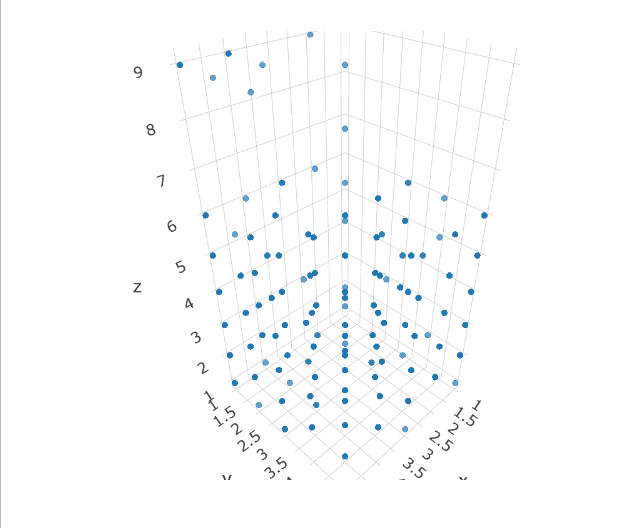
An impressive visual to say the least. But this relationship is not necessarily any clearer. What to do? Well, because I’ve checked the code guide, I know that ‘Tondu’ really is a categorical variable. In other words, it is non-hierarchically ordered qualitative response predictor. Is there any sort of regression that can handle categorical dependent variables? There is: those that are known as ‘multinominal logit regressions’. Basically, a special type of logistic twist on standard OLS regression.
Getting Log(istic)ical
As a first step, I convert ‘Tondu’ into a proper categorical variable with the ‘factor’ function:
TEDS_2016$Tondu <- factor(TEDS_2016$Tondu, levels = c(1,2,3,4,5, 6, 9), labels = c("Unification now", "Status quo, unif. in future", "Status quo, decide later", "Status quo forever", "Status quo, indep. in future", "Independence now", "No response")) This also attaches the requite labels to the output levels of the variable. Now, MLR have alot of fancy theory behind them which you can check up on here and here. One good thing about them is that we can treat explanatory ordinally structured variables as continuous.
So, proceeding ahead I make my MLR model with the ‘nnet’ library:
TEDDY <- multinom(Tondu ~ Age + Edu + income, data = TEDS_2016,
Hess = TRUE, trace = FALSE)Then, I run a summary with:
summary(TEDDY, Wald.ratios = TRUE)Giving me:
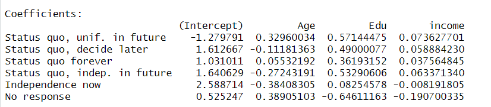 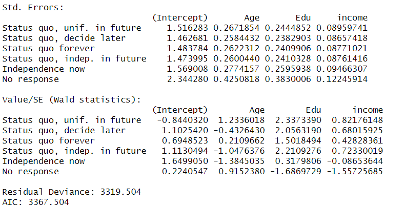
Next, in order to make these results more amenable to probabilistic interpretation, I use the ‘predict’ function from the ‘car’ library:
predict(TEDDY, newdata = data.frame(Age = 1, Edu =1, income = 1), type = 'probs')Which gives me the following result:
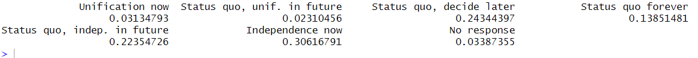
Which means that when ‘Age’ = ‘Edu’ = ‘income’ = 1, the probability of supporting ‘Unification now’ goes us about 3%, supporting ‘Status quo forever’ goes up about 14%, etc.
A better way to get a wider probabilistic output is to use the ‘ggeffects’ library:
ggeffect(TEDDY, terms = "Age[1:5,by=1]")
ggeffect(TEDDY, terms = "Edu[1:5,by=1]")
ggeffect(TEDDY, terms = "income[1:10,by=1]")The first of which gives, for example, the following:
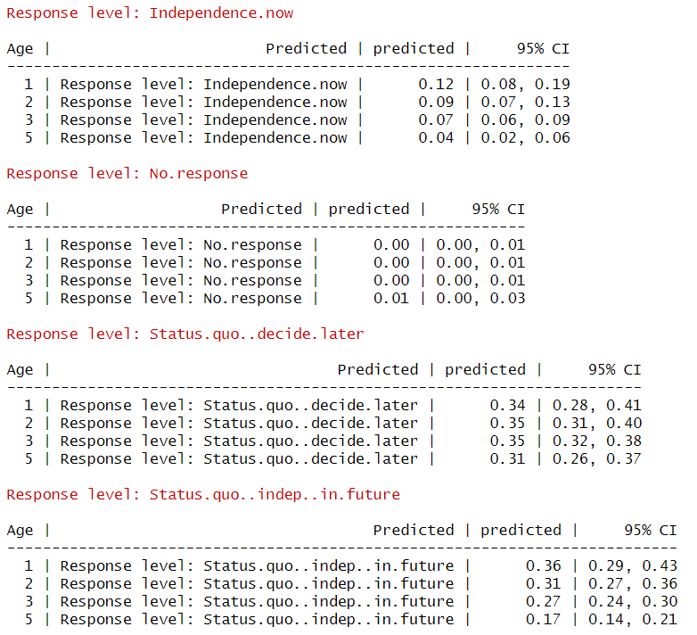
Which gives us the estimated probability of supporting, say, ‘Status quo, independence in the future’ for age bracket ‘1’ = 0.36 or 36%.
Finally, I will graph the probability outputs just derived (saving them as mark1, mark2, etc.) against the explanatory variables using variations of:
ggplot(mark1) +
aes(x = x, y = predicted, fill = response.level, color = response.level) +
geom_line() +
geom_ribbon(aes(ymin = conf.low, ymax = conf.high), alpha = 1/3) +
labs(x = 'Age', y = 'Predicted Probability') +
ylim(c(0,1))Which gives me:
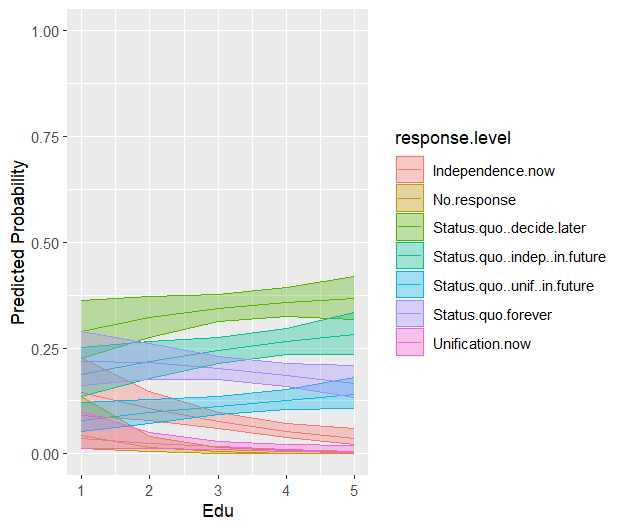 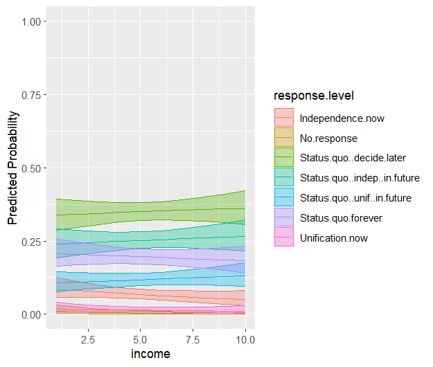 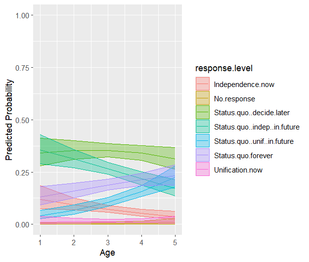
Showing the effect plots of levels of the explanatory variables associated with the probabilities of certain outcomes of ‘Tondu’.